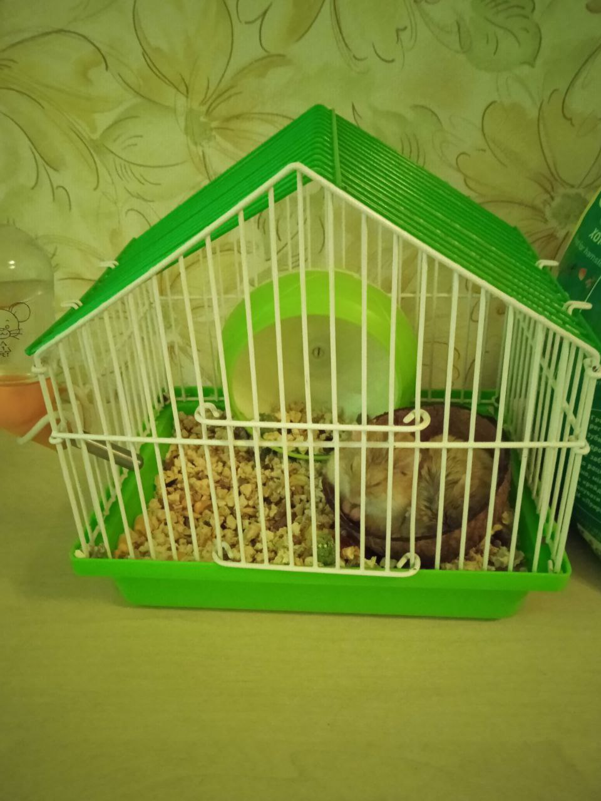
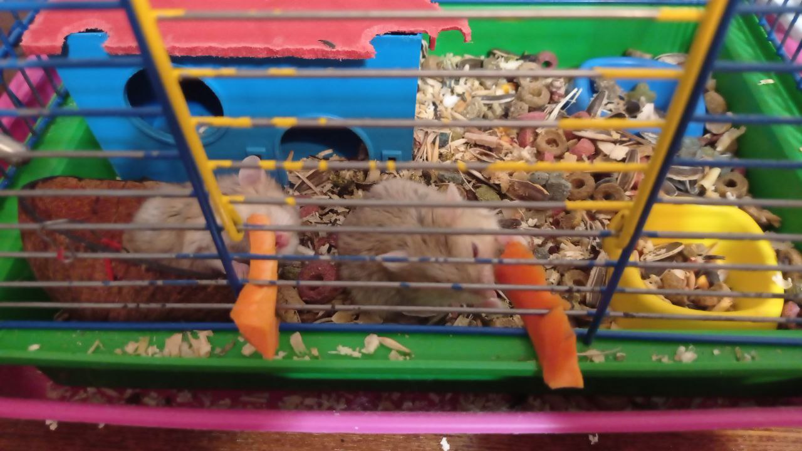
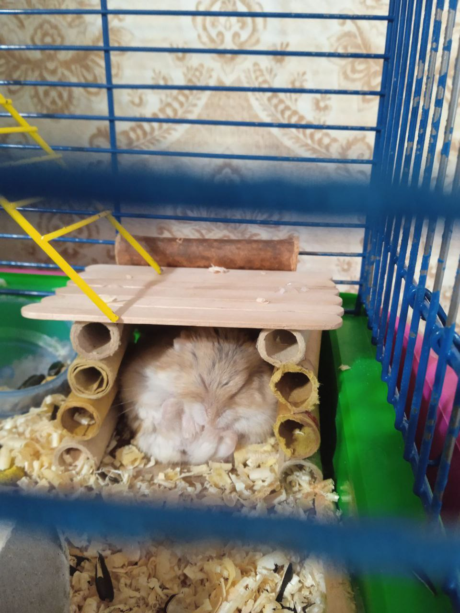

Сайт про хом'ячків
Де можно куптити хомячка по Україні в Дніпрі
Купити тутМій хом'ячок Сема
  Знайомтесь це мій хом'ячок Сема в нього є брат Жора він був в моєї сестри. Вони близнюки як і я з сестрою :)
Наші хом'ячки Джунгаріки і вони прожили 1,5 року, вони померли в один день разом 17 Вересня 2023 року. Вони були десь приблизно 9/10 см в довжину і десь 5 см в ширину. Також їх шорстка була бежового кольору і тоненька полосочка сірого кольору на спинці.
Вони їли корм з різним насінням і також ми попробували давати їм моркву, і мені здається їм зайшло:)
Які види хом'яків існують
1. Сирійські хом'ячки

Сирійські Хом'ячки являються одним із найпопулярніших видів, ще їх називають золотисті хом'ячки, у любителів маленьких тваринок. У природних умовах вони ведуть активний спосіб життя. Дуже важливо, щоби хом'ячки були з однієї групи, інакше не уникнути сварок серед тварин різних груп, що може обернутися укусами й подряпинами, іноді зі смертельним результатом.
Сирійські хом'ячки живуть у середньому 2-3 роки, але при гарному догляді й гідному утриманні трапляються й довгожителі (4 роки). У довжину ці милі створіння досягають 10 см, а хвостик мають короткий. Колір і довжина шерсті хом'ячків бувають найрізноманітнішими.
На питання - як правильно годувати сирійських хом'ячків, високоякісним повнораціонним комплексним кормом для хом'яків Padovan (Падована) Criceti GrandMix, що містить овочі та фрукти, а також збагаченим вітамінами й мінералами.
2. Джунгарські хом'ячки

Джунгарський хом'ячок популярна домашня тварина її довжина до 10 см, вага 25–65 грамів, живуть в середньому 2,5 роки. У сприятливих умовах може дожити до трьох років. Розміром цей звір приблизно з велику мишу, удвічі менше золотистого хом'ячка. Взимку, особливо при утриманні в прохолодних приміщеннях, хом'ячок стає майже білим, з домішками сріблясто-сірого. Утримувати хом'яка краще не в клітці, а в скляному акваріумі тому що, ця тваринка дика і вночі вона може гризти клітку і краску з неї і це може поганно повліяти на організм тваринки, також вона може вночі бігати по клітці і це може заважати вашому сну. Хом'яку буде дуже затишно, якщо дно клітки буде покривати товстий (близько 3 см) шар тирси.
Годувати джунгарського гризуна потрібно не більше 2 разів на добу – вранці і ввечері. Хом'яку краще давати трішки овочів наприклад моркву також їм потрібен корм з різним насінням, його можна придбати зоомагазині.
3. Хом'як Кемпбелла

Хом'як Кемпбелла належить до сімейства карликових. Довжина тіла становить лише 7-10 см, середня вага – 25 г. Середня тривалість життя хом'ячків Кемпбелла становить приблизно 2 роки. Цей гризун неймовірно схожий джунгарського хом'ячка, але, якщо уважно придивитися, його легко можна впізнати практично невиділеною, вузькою смужкою на спинці, меншим розміром вух, вузьким ромбом на лобі. У хом'ячка Кемпбелла маленькі округлі вушка, великі темні очі-намистинки і крихітний хвостик.
В цілому, хом'яки Кемпбелла дуже рухливі, активні та цікаві. Пік активності, як і в інших порід хом'ячків, посідає пізній вечір і ніч. Вони незалежні і люблять перебувати наодинці із самими собою. Хом'яки Кемпбелла досить невибагливі. Зміст, догляд та годування, як і у джунгарських хом'ячків, є стандартними.
4. хом'як Роборовского.

Хом'як Роборовського, відомий також як хом'як-робо, – найменший вид хом'яків із роду Phodopus. Ці маленькі гризуни, яких також називають карликовими хом'яками-робо, зазвичай досить швидкі. Крім того, вони можуть навчитися почуватися комфортно серед людей. Однак їх нелегко приручити до рук через невеликий розмір, швидкість і боязкий характер.
Хом'яки-робо виростають приблизно на 5 сантиметрів у довжину і важать близько 30 грамів. При народженні вони менше ніж 2,5 сантиметри завдовжки. Вони досягають зрілості віком близько 2 місяців. Зазвичай вони пісочного кольору, хоч бувають різних забарвлень, а над очима у них білі плями, схожі на брови.
Хом'яки-робо ведуть нічний спосіб життя, зазвичай прокидаються у сутінках і залишаються активними всю ніч. Хоча іноді вони видають дуже тихі звуки, саме їхні нічні рухи можуть створювати проблеми із шумом для деяких людей. Якщо ви чуйно спите, вам мабуть не слід тримати клітку у спальні. Хоча зазвичай вони слухняні, вони можуть вкусити, якщо ви їх налякаєте. Проте вони можуть навчитися впізнавати своїх господарів і можуть підходити до краю свого вольєра, якщо ви знаходитесь поблизу (особливо якщо ви пропонуєте ласощі). Їх слід тримати якомога далі від інших домашніх тварин, але вони можуть жити з іншими хом'ячками-робо в одностатевих парах або невеликих групах. Вони найкраще ладять один з одним, якщо виховуються разом із раннього віку.
Хом'яки схильні до різних захворювань, у тому числі: випадання волосся та проблеми зі шкірою, часто спричинені бактеріями, паразитами, грибковими захворюваннями, або алергією; мокрий хвіст, інша назва діареї; захворювання органів дихання, що виникають внаслідок інфекцій чи алергії.